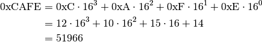

Number Theory¶
This section is currently kind of incomplete. It needs to be expanded to contain more stuff that people are often interested in, e.g. prime numbers.
Hexadecimal Colors¶
You might have seen weird colors before, like #ff0000 is somehow magically
red or #0000ff is blue. This section is all about what the heck happens in
this color notation.
Let’s start with an example. If we have a number like 2017, it really means this:

The idea with hexadecimal is that instead of using 10 as a magic number we use 16. That’s why hexadecimal is also called base 16. But the problem is that we only have 10 digits, 0 to 9, so we borrow a few letters so that A=10, B=11, C=12, D=13, E=14 and F=15. For example:

Here 0x means heXadecimal. Mathematicians don’t use it, but I used it here because it’s very common in programming. Note that the first character is a zero, not the letter O.
The sane way to calculate the last step is to use a programming interpreter or calculator of your choice. Don’t try to do it by hand.
Most programming languages have very good support for hexadecimal and a few other bases. For example, here’s Python:
>>> 0xcafe
51966
>>> 0xc * 16**3 + 0xa * 16**2 + 0xf * 16 + 0xe
51966
>>> 12 * 16**3 + 10 * 16**2 + 15 * 16 + 14
51966
>>> hex(51966)
'0xcafe'
>>> int('cafe', 16)
51966
>>> 'i went to a %x' % 51966
'i went to a cafe'
>>> 'i went to a {:x}'.format(51966)
'i went to a cafe'
Now let’s have a look at the colors. Another common way to represent colors is
rgb(R,G,B) where R, G and B are red, green and blue values between
0 and 255. For example, rgb(255,0,0) is red because the red value is at
maximum and other values are 0. rgb(0,0,0) is black and
rgb(255,255,255) is white.
You might have noticed that and
, and that’s not just a random
coincidence. A color like #RRGGBB is actually rgb(RR,GG,BB) where
RR, GG and BB are hexadecimal. For example,
#ff0000 = rgb(0xff,0x00,0x00) = rgb(255,0,0).
Here’s a Python program that converts RGB colors to hexadecimal and back:
def hex2rgb(hexcolor):
assert len(hexcolor) == 7 and hexcolor[0] == '#'
return (int(hexcolor[1:3], 16), int(hexcolor[3:5], 16), int(hexcolor[5:7], 16))
def rgb2hex(r, g, b):
# string formatting magic: %02x means hexadecimal padded with
# zeros until it's at least 2 characters wide
return '#%02x%02x%02x' % (r, g, b)
And here’s a usage example:
>>> hex2rgb('#ff00ff')
(255, 0, 255)
>>> rgb2hex(255, 0, 255)
'#ff00ff'
Note that most color parsers support specifying colors so that e.g. #f0f
and #fff000fff are equivalent to #ff00ff, but the above program doesn’t
support that.